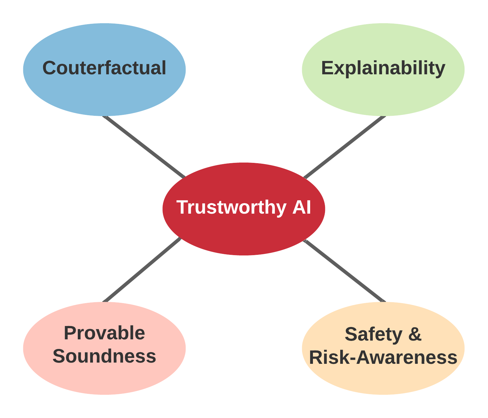
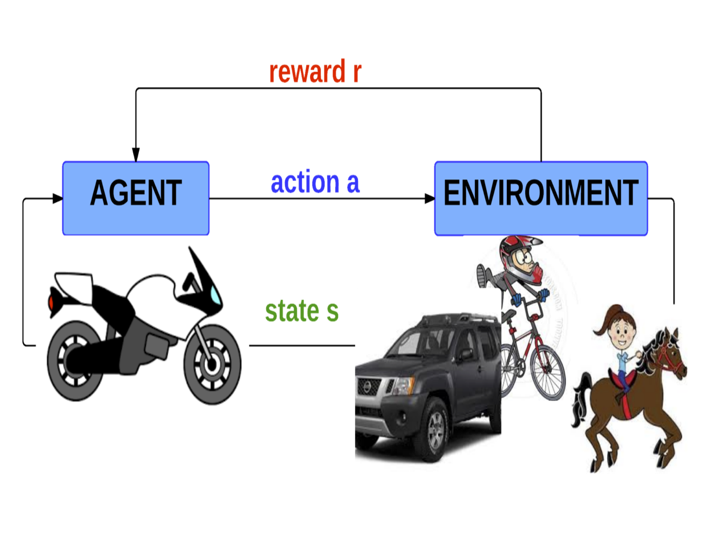

Bo Liu
Ph.D. AAAI SM, IEEE SM
Associate Professor
Department of Computer Science
3101P Shelby Center for Engineering Technology
Auburn University
Auburn, AL 36849-5347
Associate Editor, IEEE Trans. on Neural Networks and Learning Systems
Classes:
2022 Spring, Machine Learning (5630/6630/6636)(maybe outdated, check Canvas for the latest)
2022 Spring, Advanced Algorithms (7270/7276)(maybe outdated, check Canvas for the latest)
2021 Fall, Introduction to AI (5600/6600/6606)
2020 Spring, Advanced Algorithms (7270/7276)
2020 Spring, Machine Learning (5630/6630/6636)
2019 Fall, Introduction to AI (5600/6600/6606)
2019 Spring, Advanced Algorithms (7270/7276)
2019 Spring, Introduction to Algorithms (3270)
2018 Fall, Introduction to AI (5600/6600/6606)
2018 Spring, Advanced Algorithms (7270/7276)
2017 Fall, Introduction to AI (5600/6600/6606)
2017 Spring, Advanced Algorithms (7270/7276)
2016 Fall, Introduction to AI (5600/6600/6606)
* Please check the Canvas system for detailed information. All the class materials are in the "File" system on Canvas.
* To students who cannot register the class: Unfortunately, I do not have the authority to enroll you if the class is full. Please contact Mr. Clint Lovelace (jcl0014@auburn.edu) to put your name on the waiting list.
* To students who ask for absence justifications: I don't directly handle absence justifications. Please go to the Student Affair Office in the College of Engineering to ask for that and email me a copy (scan/photo) for record purposes. Thank you!